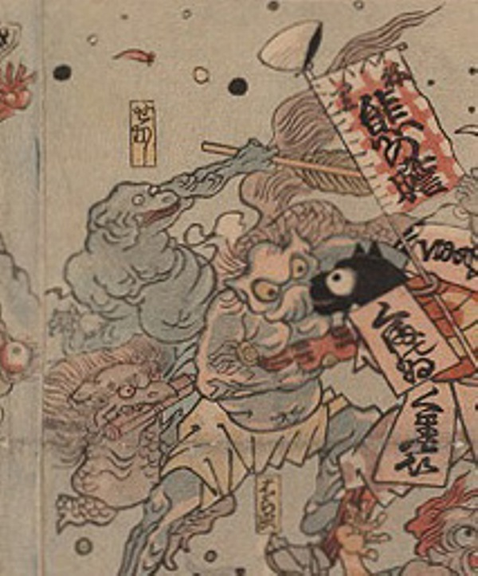

病気；ビョウキ，疫神；エキシン，龍；リュウ，せむし；セムシ

龍のような化物の背になまずのような顔をした化物が乗っている。龍は長い胴体に鱗を生やし、たてがみをなびかせている。顔には猛禽類のようなくちばしがあり、巻物をくわえている。なまずのような化物は、手に棒状のものを持っている。
著作者：歌川芳虎／出典：親書誌：U426_nichibunken_0012：諸病諸薬の戦い；ショビョウショヤクノタタカイ／日付：2006／資源識別子：U426_nichibunken_0012_0003_0000
Copyright (c)2010- International Research Center for Japanese Studies, Kyoto, Japan. All rights reserved.